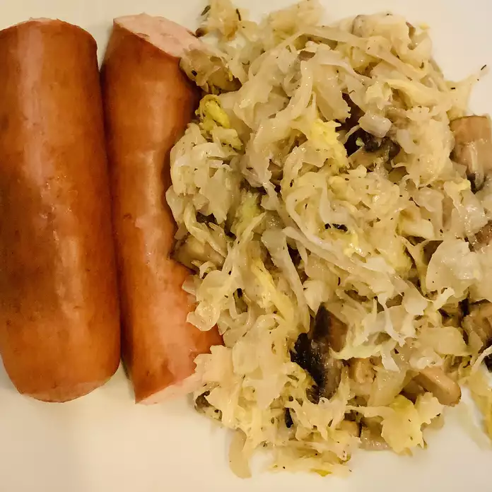

See the picture below. Ever seen such an amazing sight before? It tastes just as amazing as it looks. Come on get your kitchen mantra charged up!
Kapusta is a great side dish at any meal and even makes a great main dish for vegetarians. This recipe was passed down by my Polish grandmother. I grew up with it at every holiday meal and just love it. Sauerkraut takes on a whole new flavor when baked and is really delicious! Try it and see for yourself!
Note: Default quantity yields 6 servings
Now that you are ready...
Per Serving: 151 calories; protein 2.6g; carbohydrates 11g; fat 11.8g; cholesterol 30.5mg; sodium 760.5mg. Full Nutrition
Whoo! Enjoy your meal.